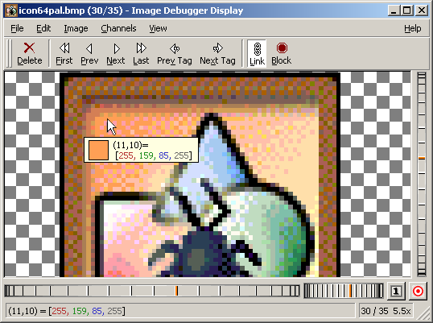
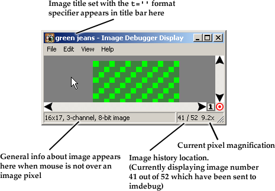
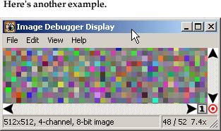
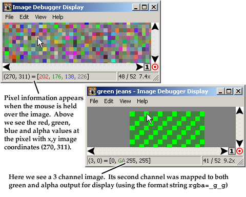
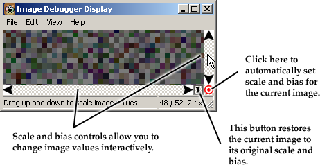

A utility for simple printf-style
debugging of images in Win32 C/C++ applications.
(and soon to be Linux!)

(and soon to be Linux!)
[ About
| Screenshots | Installation
| Usage | Bugs | History | Acknowledgements
| Download | Contact ]
"The Image Debugger" is a programmer's utility to make debugging of Win32 applications that use images and grid data easier. Examples of such applications include 3D games and visualization applications, as well as grid-based numerical PDE simulation codes. "The Image Debugger" could even conceivably be used to debug dense matrices. The code is for Windows only for now, but the Linux port has been started and should be completed any day now.
Often when creating graphical applications you have a chunk of memory that you know is supposed to look some certain way. Unfortunately debuggers don't typically have a way to view that memory as an image, and so it's a real pain to figure out whether the image is correct or not. That's where "The Image Debugger" comes in. The typical solution -- if looking at the raw numbers in a debugger is not sufficient -- is to write a bit of code that will dump the data to a file, which can then be looked at using something like Matlab, or if you already have a graphical app, you can write some code to splat some images up on the screen on top of the actual graphical output you're trying to generate. Either way it takes some effort. And often it's a real hassle if you're working with double-buffered graphics, because if you want to see drawing as it's happening you have to switch to drawing on the front buffer, and even then if you're stopped at a breakpoint in the debugger and your window gets partially covered, you lose the image.
With "The Image Debugger" your data pops up in a separate window with none of those problems and with just a single line of code. That's all it takes! You can go from a bare bones "hello world" console application to visual output with just one line of code. Basically you can think of this utility as a "printf" for images. So aside from debugging images, one thing you could use imdebug for, for example, would be as a really quick-and-dirty front end for a ray tracer. You write the ray-tracer, then you can make one call to imdebug to show the results.
But debugging is the primary purpose for imdebug. To debug a simple variable, x, one way is to toss a 'printf("%d\n", x)' at a strategic location in your code. With The Image Debugger if you have an 128x128 RGB image in img, you can simply "printf" it with a call like 'imdebug("rgb w=128 h=128 %p", img)' . For more details see the Usage section below.
Here's a screen capture of The Image Debugger's output viewer application.

(NOTE: the rest of the screenshots are from an older version of imdebug, but the functionality of the latest version is pretty similar.)
These next few annotated screen shots explain some of the status messages and UI elements.




First download either the src or bin distribution. Then to install, just unzip the files into a temp directory. Then copy these files into the following locations:
FILE
INSTALL LOCATION
imdebug.h Put someplace where your compiler knows to look for include files. imdebug.lib Put someplace where your compiler knows to look for library files. imdebug.dll
imdbgdisplay.exePut someplace on your path, or in the same dir as the app you're debugging.
If you download the src package you'll find precompiled versions of the binaries in the "lib" directory.
That's all there is to installation!
There are two parts to usage: calling imdebug from your code, and using the displayer to look at the output from your application.
1. Using The Image Debugger in your code
The first thing to do is put this in the file you want to debug:The next step is to call it. The one function exported from the imdebug DLL has this prototype:#include <imdebug.h>
That doesn't tell you a whole lot. But basically that's the same argument list as printf(): a format string followed by a variable number of arguments. The operation of imdebug is similar to printf. The format string contains all the information about how to parse the rest of the arguments passed to the function. The format string is basically a snippet of code in a mini-language that I devised.void imdebug(const char *format, ...);
Before going into the format syntax ins and outs, let's just take a look at a few usage examples (from testapp.cpp distributed in the source zip above). Here are the declarations of the images we're going to try to display:
unsigned char testRGB[16*17*3]; // 16x17 3 8-bit channels
unsigned char testRGBA[16*17*4]; // 16x17 4 8-bit channels
unsigned short testRGB16[16*17*3];// 16x17 3 16-bit channels
float testRGBf[16*17*3]; // 16x17 3 32-bit float channels
unsigned char testBigRGBA[512*512*4]; // 512x512 4 8-bit chan
Now here's a bunch of different examples of ways to call imdebug. Basically the minimum requirement is that you specify the width and height of your image, how many channels it has, and how many bits are in each channel.
The first example does just that:
The 'rgb' says this is a 3 channel, RGB format image. You could also say 'bgr' if that's the order of your images channels. 8 bits per channel is assumed if nothing is specified. The 'w=' and 'h=' statements tell imdebug the width and height of the image. The actual values could be entered directly in the format string, like 'w=16 h=17' but it's also possible to use the '%d' specifier to tell imdebug to get the value from an input argument instead. Finally the '%p' indicates the image pointer argument.imdebug("rgb w=%d h=%d %p", 16, 17, testRGB);
Here's another exampleThis is just like the last one exept for the swizzling statement "rbga=__gg". This tells imdebug to remap the input channels when displaying the image. An '_' indicates a channel should be discarded. In this case we see the green input value will be used both as an alpha channel and as the green channel, while red and blue channels will just be ignored. Note that that's "rBGa" not "rGBa". Originally when I typed it I made a typo, but Imdebug can interpret the statement either way. If I had typed the latter, then imdebug would map the green input to the blue and alpha channels instead of green and alpha.imdebug("rgb rbga=__gg w=%d h=%d %p", 16, 17, testRGB);
To specify the bit-depth of your channels use the 'b=' statement:The 'f' indicates floating point values instead of integer values.imdebug("rgb rbga=gggg b=32f w=%d h=%d %p", 16, 17, testRGBf);
Using '*auto' tells imdebug to autoscale (and bias) the values in the floating point image to a [0,1) range for output. Useful if you're looking at non-image floating point data which isn't in the [0,1) range:Here are some other examples:imdebug("rgb rbga=gggg *auto b=32f w=%d h=%d %p", 16, 17, testRGBf);
imdebug("rgb rbga=__gg b=16 w=%d h=%d %p", 16, 17, testRGB16);
imdebug("rgb rbga=gggg w=%d h=%d %p", 16, 17, testRGB);
imdebug("lum b=32f w=%d h=%d %p", 16*3, 17, testRGBf);
imdebug("rgba w=%d h=%d %p", 512, 512, testBigRGBA);
And finally here's the syntax description from the imdebug.h. It's not necessarily all 100% correct or 100% tested. If something doesn't work let me know.
VARIABLE SPEC:
%d - int
%f - float
%s - string
%p - picture (pointer to raw image data)
INPUT FORMAT SPEC:
rgb
bgr
abgr
rgba... - specify input image channel order
lum - 1-channel image: lumninance
luma - 2-channel image: lumninance + alpha
#7 - Generic 7-channel image
---> (default is rgb)
b=8 - size of all channels is 8 bits
b=5,6,5 - size of channels is 5bits(R) 6bits(G) 5bits(B)
b=32f - size of all channels is 32 bits, float format
---> (default is b=8)
OUTPUT FORMAT SPEC:
rgba=rg__ - just display the red and green chanels
rgba=aaa_ - display alpha as grayscale
lum=g - display green as grayscale
rgba=#0512 - map channels by number
---> (default is 1-1 mapping with no translation or swizzling)
ATTRIBUTE SPEC:
w=23 - width is 23 (default 0)
h=17 - height is 17 (default 0)
rs=1 - skip 1 row after every row (default 0)
cs=2 - skip 2 columns after every column (default 0)
t='img2' - title to put in displayer titlebar
SCALE AND BIAS:
*1.2 - scale by 1.2
/1.2 - scale by 1/1.2
+128 - bias by 128
-0.5 - bias by -0.5
*auto - automatically scale & bias based on max & min values
--> Default is scale=1 and bias=0
--> Output value is computed by first scaling, then biasing, i.e.
out = (in*scale)+bias,
the same order as with OpenGL glPixelTransfer functions.
Order of specifiers is mostly not important, but channel swizzeling should come after input format specifier.
(i.e. do "rgb bgr=rgb", not "bgr=rgb rgb")
If no image is specified (with '%p'), then the previous
image data is used.
If you have installed the header file and .lib file where your compiler can find them, then compiling your app with imdebug should be just like compiling without. You shouldn't have to do anything special to get it to link. The header file uses a special "#pragma comment" to tell the linker to link with the DLL, so you don't have to add it explicitly to your link command. (Recent versions of GLUT use this technique too).
Using imdebug with OpenGL
Here's an example of some utility functions for looking at OpenGL textures using imdebug:Mark Harris and I have put together imdebug utility functions for OpenGL: imdebuggl.h. The main imdebug function in this header is :
There are also functions that read the color, depth, and stencil out of the current frame buffer and dump those pixels to the imdebug window.imdebugTexImage{f}(target,myTextureID,level,format).The header is for C++ only.
2. Using the Output Viewer
When you call the imdebug() function, the imdebug.dll launches the output viewer, imdbgdisplay.exe (show in the screenshots above) and sends it a copy of the image data that you passed in as the '%p' argument. Once the output viewer app has the data, the app can make whatever changes it wants; the viewer's local copy will not change. (For the curious, this inter-process communication is accomplished using a memory-mapped file).
Repeated calls to imdebug() cause the viewer to buffer up the images. You can use the GUI to navigate and inspect the most recently output images. The history holds up to 10 images initially, but is user-configurable.
The main GUI functions are as follows:
Mouse drag translate image around Mouse wheel zoom image in and out Ctrl+Mouse wheel navigate back and forth in the history buffer Up Down navigate back and forth in the history buffer
PgUp PgDn also navigates, but skips directly to the next or previous
image whose title matches the current image.
(Image titles are set by putting a t='a title' in the format string.
Ctrl+G toggle the pixel grid lines on and off Ctrl+F toggle flipping in the Y direction Ctrl+B
toggle background type (solid gray or checkerboard) Ctrl+I Block new images coming from the app (ignore output from app) -
zoom out
=
zoom in
/ rescale image to fit in window Shift+0 - Shift+9
zoom to preset magnifications
(Shift+1=100% ... Shift+9=900%, Shift+0=1000%)
Ctrl+1 - Ctrl+6 change color channels being displayed
I had to leave a few bugs in to keep life interesting. There are also many features that could make things even more groovy.
Top on the list are:Known Bugs
- The row stride and column stride settings (rs=,cs=) need work. I think they're currently broken. You'll have to use densely packed data for now.
- Can't handle non-native endian data. For 8-bit channels, of course you can just call your RGBA image AGBR and you're set. But for 16-, 32-, and 64- bit channels there's trouble.
- I'm probably not handling the distinction between signed and unsigned data types correctly, but I haven't really had much need for such a thing..
Desiderata
- The ability to control the channel selection and swizzling from the GUI would be handy.
- A way to change to other backgrounds in the viewer. Either provide a larger selection of built-in backgrounds or a way to load an external image to use as a background. Often that checkboard background can look way too much like the data you're trying to see.
- Allow OpenGL texture IDs as the %p argument and have the imdebug() function automatically snarf the data for you with an apropriate glGetTexImage. Maybe same thing for glReadPixels too so you can imdebug() the usually non-visible depth and stencil buffers easily.
- "Pixel watch". The ability to click on one or more pixels of an image and have those values appear in a list. Then you could see what's happening to a value over time without having to make sure the mouse is over the right pixel.
- A new version of Visual C++ that just has this sort of image viewing built in!
Aug 30, 2003 Version 1.13-beta
Fixed a couple of bugs with images past the buffer size getting dropped, and with the blocking mode causing long delays.
Aug 18, 2003 Version 1.12-beta
Fixed bug with images getting dropped when sent rapidly back-to-back.
Aug 7, 2003
Version 1.1-beta.
Added some more UI and a "linked image" mode that syncs all image changes so that if you zoom and scale one image, all images with the same title will be zoomed and scaled the same way.
Aug 4, 2003
Version 1.0-beta.
Ported GUI front-end from straight Win32 to FOX toolkit.
FOX allows me to handle status and tooltip help more nicely, and support image load and save. It also enabled me to use nice UI controls for scale and bias, rather than the cheesy static bitmaps I had that didn't respond in any way.
Using FOX also means that imdebug can now be ported over to Linux/Unix pretty easily.
Some other specific new features added:
- "Link Image" mode. In this mode, when you drag or zoom or change scale and bias on any image, the same changes are also made to all other images with the same title currently in the history buffer. This makes it easier to go back and forth to compare differences between different instances of the same image. (Similar but slightly different from the old "Propagate Scale&Bias mode")
- "Replace Images" mode. In this mode when a new image is recieved with a particular title, like 'foo', that image overwrites the last image with that title. This way if you imdebug an image titled 'bar' once early on and then imdebug 'foo' 100 times in a loop, 'bar' will remain in the history buffer, along with the most recent version of 'foo'.
- "Hold on image" mode. Causes the display window not to automatically jump to the the most recent image. Particularly useful with "Replace Images" mode.
- Navigation by title. Using PgUp and PgDn now takes you back and forth directly to the previous and next images with same title, skipping all images in between. Just like getting on the express train! Using Up and Down arrows takes you on the "local train" with all the stops along the way (like PgUp and PgDown used to).
- Tooltips! You now get the pixel info directly under your mouse so you don't have to look down at the statusbar constantly. You can flip back and forth between two versions of the same image now using PgDn/PgUp, and if you leave your mouse in place you can see the change in values in the tooltip.
Apr 4, 2003
Version 0.954b.
Fixed "alpha" on "channels" menu. Now alpha displays as grayscale.
Apr 2, 2003
Version 0.953b.
Added a "channels" menu, basically to allow turning off the alpha channel interactively. If alpha is all 0, you can't see the other data, which is annoying. Of course you can specify "rgba=rgb_" in your format string, but you'd like to be able to get the same effect on the fly, and now you can.
Mar 7, 2003
Version 0.952b.
Fixed aligment of images in the window when "flip" is checked.
Fixed auto-scaling of images that are all one color.
Feb 23, 2003
Version 0.951b.
Added option to automatically copy the scale & bias of a tagged image to the next image with the same tag. Currently it's overridden by any specific scale or bias set on the image itself using the format string.
Feb 18, 2003
Version 0.95b.
Added button to set scale and bias back to identity.
Changed "Ready" message to give info on image (resolution, bit depth, etc.)
Feb 17, 2003
Version 0.942b.
Fixed parsing of bias syntax in format string.
Added some UI to allow interactive munging of scale and bias.
Jan 26, 2003
Version 0.94b.
-Added somewhat meaningful error status messages for some cases.
-Increased memory mapped file limit be able to handle RGBA images of 32f 2048x2048.
-Added dialog to change number of images saved in history buffer.
-Fixed bug with flipped images not getting the status correct.
-Fixed error trying to allocate negative memory when window made too small.
-Made it so status message isn't set to "Ready" so often when it could say something useful.
-Made status message indicate which values are mapped to which output channels.
-Added option for reusing/sharing the display window so you don't end up with like 23 "Image Debugger Display" windows hanging around all the time.
-Added t='label' to format string so you can give images intelligible labels that will make it easier to distinguish which of 10 all black images is the one you're looking for.
-Added big red "BLOCK" status indicator to let you know when the displayer is not listening (in case you accidentally hit Ctrl-I or something)
Sept 19, 2002
Version 0.931b.
I think I fixed the clipboard Edit->Copy problem. Maybe. It worked for me, anyway, though I can't say why for sure.
Sept 15, 2002
Version 0.93b.
Added state save and restore using windows registry. (remebers window position and checked menu items)
Sept 13, 2002
Version 0.921b.
Reports errors when imdbgdisplay not found.
Added alt-left and alt-right keys for navigating images.
Sept 11, 2002
Version 0.92b.
Added support for packed bit formats like 5,6,5. Will work as long as the total bits are a multiple of 8, which most real formats are.
Added support for independent scaling and biasing on a per-chanel basis, like OpenGL allows.
Sept 10, 2002 Version 0.91b.
Added the '#8' type format specifications for dealing with data having more than 4 channels. Just something that I had forgotten to include in the parser.Sept 9, 2002 Version 0.9b
First release.
The Image Debugger 1.13 beta is now available! The major change is that the GUI has been totally rewritten using the FOX toolkit which also means that a port to Linux should not be far behind. I'm just putting up Win32 binaries. Source code is still available, though, on request.
- Win32 binaries: imdebug-1.13b-bin.zip
The older Image Debugger version 0.954b can be downloaded from the links below:
- Binary only distribution: imdebug-0.954b-bin.zip
This has everything you need to use The Image Debugger:
- imdebug.h - header to #include in your app
- imdebug.dll - dll to link with your app (note this happens automatically)
- imdebug.lib - export library necessary for compiling your app agains the dll.
- imdbgdisplay.exe - the output viewer application. (Launched automatically when you call
imdebug())testapp.exe - a very basic test program made with OpenGL/GLUT that spits out a few images in its display function and draws a lame-looking teapot in its GL window. You may need to grab the GLUT dlls to get it to run.
- Binaries + full source code: imdebug-0.954b-src.zip
This has everything the binary only distribution has, plus all the source code. It also includes project files for MSVC++ 6.0, as well as a makefile that works with Microsoft's NMAKE.
Thanks to the developers of the FOX Toolkit and especially Jeroen van der Zijp, for his helpful replies on the foxgui-users mailing list. I've worked with a number of GUI toolkits, and I have to say FOX is one of the nicer ones I've tried. The library has a nice feel to it (even though the messaging system is kind of difficult to get the hang of). The documentation is a bit sparse, but the source code itself is quite clean and readable for the times when you can't figure out what you need in the doc. And there are a good number of example programs to go from, where you often find exactly the code you need to steal.
Thanks to Jeffrey Richter and Charles Petzold, without whose books (this one and that one) there's no way I could have figured out how to do the original imdebug (i.e. figure out how to write a straight Win32 C program that uses memory mapped files to communicate inter-process data). Thanks also to Willem van Schaik who wrote "VisualPNG". The image display code in the original straight Win32 imdbgdisplay.exe (versions v0.9b-v0.954b) were based initally off of his source code. More info at Willem's website here.
Thanks to the person over at http://www.codeproject.com (I think!) whose comment about an image debugger got me thinking about this idea. I got excited because when I saw him use "image" and "debug" in the same sentence, the first thought I had was that he had written something like the utility I ended up writing. It turned out, though, that his program was of a somewhat more limited scope. I'm not sure what his name was, and I haven't been able to find the link again since then.
Thanks to Andrew Z. whose one followup to my post on unccs.graphics was all the convincing I needed to go and write this, and thanks to Mark Harris for his copious and useful suggestions.
The Image Debugger was developed by William Baxter. I'm currently a PhD student at the University of North Carolina at Chapel Hill working on graphics and interactive techniques. If you're interested, have a look at the other projects I've worked on.
If you find this software useful, or make any improvements, please let me know. If you have patches you'd like to contribute by all means please send 'em in!
<EMAIL ADDRESS> You can contact me by by sending email to my last name @cs.unc.edu. Or by going to my feedback page.
Happy Image Debugging!